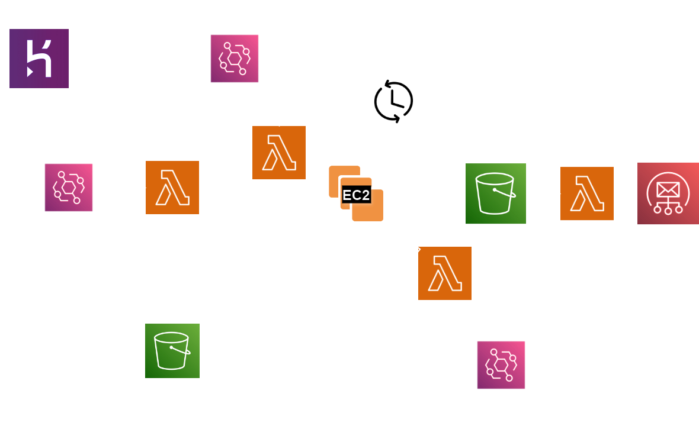
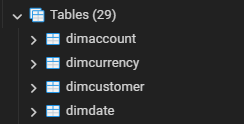
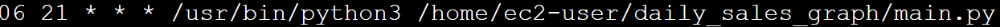

About This Project
I developed this project to make it easier for the finance department to get daily sales graphs. It's designed to be flexible, handling various data requests seamlessly. Every day, the team accesses up-to-date reports and the associated CSVs and images stored on S3.
To achieve this, I utilized six AWS services—Lambda, EC2, S3, SES, EventBridge, and IAM for role management—along with Heroku PostgreSQL. Opting for an external database with Heroku PostgreSQL alongside AWS allowed us to enhance the flexibility of our data management setup.
Initially, I started with Lambda but soon encountered limitations related to size and compatibility issues with matplotlib. Switching to an EC2 instance solved these problems and also provided a scalable solution for future tasks. Now, every weekday morning, each department member receives an email with the latest graph. This simple yet effective change has streamlined our decision-making process, keeping everyone informed and aligned.
This diagram shows the structure of my project with all the AWS services and their relationships. It’s a handy reference for understanding how my services is organized and interconnected.
Step 1 - Creating DB on Heroku
For this project, I decided to use the Microsoft Adventure Works database. It’s originally built for MS SQL Server and is perfect for showing off what a real e-commerce operation might look like. I had to shift this over to Heroku PostgreSQL, which was a bit of a challenge, but using pgAdmin helped me get all 29 tables set up using CSV files.
The database is really the backbone of our application. It has everything from inventory management to customer interactions, and each table has its own set of rules to make sure the data stays clean and useful. I went with Adventure Works because it's complex enough to really demonstrate what you can do with advanced SQL and proper database management in a real-world business context.
Let's start with a code that is used for a table. This is used to create a table and all the column properties are mentioned
CREATE TABLE DimReseller (
ResellerKey SERIAL PRIMARY KEY,
GeographyKey INT,
ResellerAlternateKey VARCHAR(15),
Phone VARCHAR(25),
BusinessType VARCHAR(20) NOT NULL,
ResellerName VARCHAR(50) NOT NULL,
NumberEmployees INT,
MinPaymentAmount MONEY,
#add other 12 columns
);
Here I had to do some modifications because CSV files already had primary key. So i chnaged ResellerKey to ResellerKey INT PRIMARY KEY before I uploaded CSV to the table.
The code for creating all tables is here
There are 29 tables in the DB so I had to do this for all 29 of them. At the end I had all of them in the DB
Along the way I had to do some more altercations because the CSV files had some mismatches with the tables I created.
ALTER TABLE newfactcurrencyrate
ALTER COLUMN currencykey TYPE FLOAT;
All table creation codes can be found in the repo.
Step 2 - RDBMS to S3 using Lambda
The first part of the code was to extract data from a Postgres db by running a query and saving results as csv. This task is going to be repeated everyday. I will explain how that part of the task was achieved later in the project.
When I tried to use site packages of psycopg2 I had issues until I found this helpful github repo on jkehler/awslambda-psycopg2 . They solved the issue by compiling psycopg2 with the PostgreSQL libpq.so library instead of the default dynamic link.
Set up environment for function:
I used the psycopg2-3.11 version and created a lambda function with the same configuration. I also used the AWSSDKPandas-Python311 layer. You should create a layer to access the pandas library.
Code:
Here is important parts of the the code for the lambda function I used. You can get the entire code here:
# import boto3,json,pandas,psycopg2,io,datetime and os
# define lambda handler with DB parameters
# set up the connection
# execute the query
cursor.execute("SELECT city, sum(yearlyincome) as avg_income FROM prospectivebuyer group by city order by avg_income desc limit 10;")
# fetch result and convert to a DataFrame and save as csv
# Create an S3 client
s3_client = boto3.client('s3')
today_date = datetime.now().strftime('%Y-%m-%d')
#Here I used datetime function to get date later on to use as a filename.
# Upload CSV to S3
bucket_name = 'yourbucket'
object_name = f'graphs/sales_daily_{today_date}.csv'
#Since this process is going to be repeated I want an automated name for eveyday's file.
# Close the cursor and connection
# Return the result as JSON
Creating a role for Lambda:
Last thing but not the least about AWS lambda is that we need to create a role from IAM and attach this to the function. This function should be able to write to S3.
Lambda function needs a role to be able to write to S3 bucket. So I created an S3 access role in IAM (Identity Access Management) and allowed full access to the role. Then I attached this role to the function from Function > Configuration > General Configuration > Existing Role. At this point Lambda can read from the RDBMS and saves it to the defined bucket. Next step is to schedule this.
I also increased the timeout to 10 secs and this can be adjusted according to the time code will need to run in order not to timeout.
Scheduling Lambda:
This is time to schedule the task. We need to use Event bridge and create schedule for this function. I cretaed a schedule for this function to run everyday at 5 pm (this can be adjusted) to retrieve the data and save it to S3.
Step 3 - Drawing graphs on EC2
Initial plan and adjustment:
I was planning to use Lambda throuhout but Lambda could not handle matplotlib the way I expected. When I tried using layers that I cretaed it was too large (larger than 250 Mb unzipped). This was more than AWS allows even using S3 to store the layer. When I deleted some libraries pandas didn't function well. I also tried to create libraries using manylinux wheels but I could not solve dependency issues. So I revised my plan. I decided to use EC2 and schedule EC2 to save costs.
Setting up EC2 and testing code locally (in EC2):
I created an instance with minimal configurations. This task is not compute heavy and this instance can be used for other automation tasks. I used Amazon Linux. After creating the instance I tried the code locally. I was able to save file locally.
Connection with S3:
After testing locally I connected to S3 to read and write. As a part of this project we had to save files on S3 to keep as further processing. All CSV files are stored by Lambda function and all images after drawing the graph are stored by EC2.
To connect S3 we again need to use IAM roles and attach a role to EC2. This role has permission to read and write permissions from S3
Code for creating a graph using Pandas and Matplotlib:
Here are some insights from code. Complete code can be found at:
# import pandas,matplotlib,boto3,BytesIO from io and datetime
# Initialize a session on S3
s3 = boto3.client('s3')
# Today's date for dynamic file access and saving
today = datetime.now().strftime("%Y-%m-%d")
# Bucket and object key for reading the CSV dynamically based on today's date
bucket_name = 'yourbucket'
object_key = f'graphs/sales_daily_{today}.csv'
# Get the object from the bucket
obj = s3.get_object(Bucket=bucket_name, Key=object_key)
# Read data from the object's body directly into a DataFrame
data = pd.read_csv(BytesIO(obj['Body'].read()))
# Plotting the bar graph and formatting
# Format y-axis to display values in a readable format
plt.gca().get_yaxis().set_major_formatter(plt.FuncFormatter(lambda x, loc: "{:,}".format(int(x))))
# Save the plot to a BytesIO object
img_data = BytesIO()
plt.savefig(img_data, format='png')
img_data.seek(0) # Rewind the BytesIO object
# Upload the image to S3
upload_bucket = 'uploadbucket'
upload_key = f'plots/daily_graph_{today}.png' # You can change the directory structure if needed
s3.put_object(Bucket=upload_bucket, Key=upload_key, Body=img_data, ContentType='image/png')
Scheduling the task using crontab:
I had to schedule this task using crontab. EC2 is going to be active certain times of the day to save costs and cron will automate the job. Here is the cron I used:
This code means this task will be repeated everyday at 21:06 and one more detail: If you do not set up Amazon Linux uses UTC. So I had to adjust the timing according to that.
Now the graph is stored in S3 with a unique name for the day.
Managing EC2 with scheduled start and stop times:
EC2 can run whole day if necessary but we pay as much hours as we use. So, I decided to schedule this. We can again use Lambda with Event Bridge to schedule this so we don't use EC2 unnecessarily.
Lambda code for starting and stopping EC2:
import boto3
def lambda_handler(event, context):
ec2 = boto3.client('ec2', region_name='your-region') # Specify your region
instances = ['instance'] # Specify your instance ID
ec2.start_instances(InstanceIds=instances)
return {
'message': "EC2 instance started"
}
import boto3
def lambda_handler(event, context):
ec2 = boto3.client('ec2', region_name='your-region') # Specify your region
instances = ['instance-id'] # Specify your instance ID
ec2.stop_instances(InstanceIds=instances)
return {
'message': "EC2 instance stopped"
}
Scheduling Lambda functions to start and stop EC2:
After creating Lambda fucntions I scheduled them to start and stop using Event Bridge. I planned 45 minutes for EC2 to run but this time can be adjusted according to needs of company and also for running multiple tasks on EC2. For high end instances it is important to manage run times.
Step 4 - Email the graph
Setting up SES:
This AWS Service needs more set up than other services. You need the register your email and also a domain if possible. I have my own domain so I registered both. For email you get a confirmation email and it is done. For domain you need to add keys to your DNS on domain providers site. After that are still in sandbox and you need to request for AWS to take you out of sandbox.
You can only send to registered emails in sandbox with a limit of 200 emails/day and 1 email/second.
I requested for that and it took around a day to get approved.
Setting up Lambda function to send emails:
We need another function to send emails to the team. Whenever EC2 is done with the graph and image is stored in S3. S3 triggres this lambda function and Lambda sends an email with a predefined text to team members with the graph attached. This lambda fuction also needs permission for S3 and SES. These can be cretaed in IAM and attached to the function.
Here is the fuction to send emails. Complete code can be found at:
#import boto3,base64,os,...
#define lambda_handler with s3 and ses clients
# Extract bucket name and key from the event
# Get the file content from S3
# Create a MIME multipart message (use a txt file to store email addresses in the directory with fuction)
with open('emails.txt', 'r') as file:
email_list = [line.strip() for line in file if line.strip()]
msg = MIMEMultipart()
msg['Subject'] = 'Daily Sales Graph'
msg['From'] = 'your@email.net'
msg['To'] = ', '.join(email_list)
# Attach text body
msg.attach(MIMEText('Here is the daily sales graph.', 'plain'))
# Attach the image
img = MIMEImage(file_content)
img.add_header('Content-Disposition', 'attachment', filename=key)
msg.attach(img)
# Send the email
Screenshots
Database overall
If you have any questions, please feel free to reach out to me at your.email@example.com.